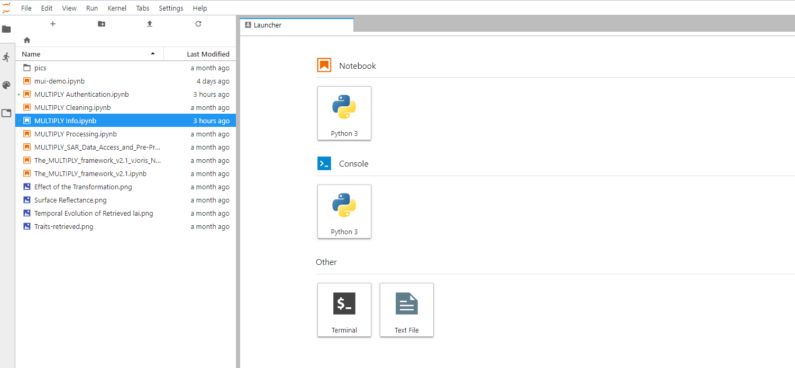
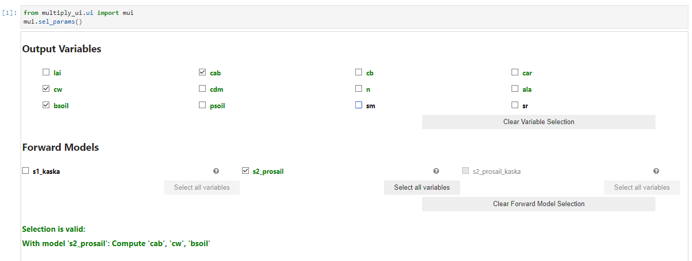
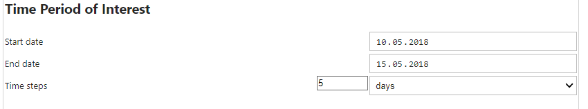
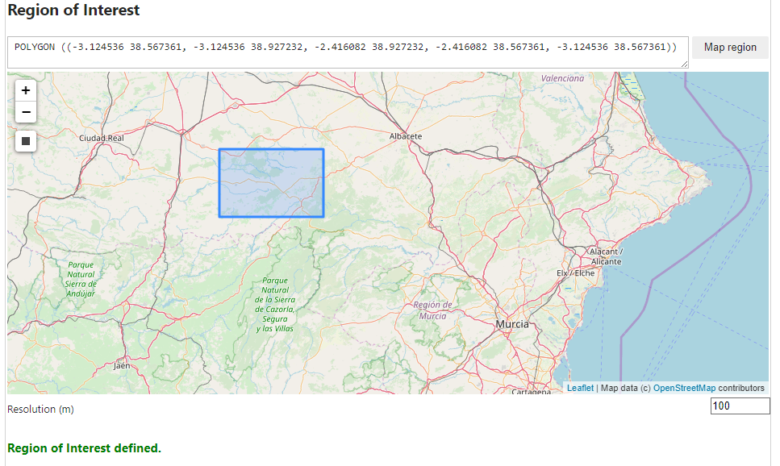
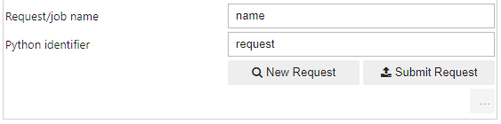

How to create and use a MULTIPLY VM
The MULTIscale SENTINEL land surface information retrieval Platform (MULTIPLY) allows to derive
biophysical land parameters such as Leaf Area Index (LAI) or Soil Moisture.
Users may determine a spatial region of interest and the resolution of this region,
but also a start time, an end time, and time steps between these.
The results will be derived using forward models that operate on EO Data from the Sentinel Missions.
Users also have the option to specify which forward models they want to useor to
apply post-processors to derive additional indicators.
You need a Mundi account to launch your personal MULTIPLY VM on Mundi and use it from the browser
of your local machine.
On Mundi, your VM accesses available Sentinel data directly avoiding download to your local PC.
1. Create your Mundi account
You need to register with Mundi and sign a contract to become a user of the cloud infrastructure of Mundi with access to Sentinel data. The cloud provider of Mundi is OTC. Note that the use of cloud resources is linked to costs, depending on your actual usage. See the following links for more information:- https://mundiwebservices.com/
- https://mundiwebservices.com/offer
- https://mundiwebservices.com/contact
2. Create your Multiply VM
The MULTIPLY VM (instance) is based on a prepared MULTIPLY image, which is provided as a image file. To create the VM, you must first turn the publicly available image file into a private image of your tenant. Afterwards, you can use this image to create Virtual Machines.2.1 Create a private image
The necessary steps to do this are listed below:- First, You need to download the image file from https://multiply.obs-website.eu-de.otc.t-systems.com/images/multiply1-20190303.vdi (13.3 GB). You may find it most convenient to download the image using the sc3cmd tool, which is useful for several purposes when working with the OTC. See here for more information on how to use this tool with the OTC or here for download instructions. If you work on linux, you can simpyl install with sudo apt-get install s3cmd. Use s3cmd --configure to set up your account for S3 access. After the configuration, you can download the image file with s3cmd get s3://multiply/images/multiply1-20191215.vdi
- Create your own bucket. You can do this with s3cmd mb s3://mybucketname
- Upload the image to your own bucket with s3cmd put multiply1-20200303.vdi s3://mybucketname/images/multiply1-20200303.vdi
- Use the Image Management service to create your private image from the file.
- Login into your account at https://auth.otc.t-systems.com/authui/login.action?service=https://console.otc.t-systems.com/ecm/#/login .
- Select IMS
- Select Create Image
- Select Image File as source
- Select the .vdi file in your bucket
- Check Enable automatic configuration>
- Set the system disk to 30 GB.
- Choose a name for your image.
- Press Create now Please note that it is not possible to add a data disk at this point.
2.2 Create a Virtual Machine
Now you can actually create a VM from your private Image. Assuming you are still logged in into your OTC account:- Select Elastic Cloud Server (ECS) in the main window
- Select Create ECS (in the upper right)
- Select a flavor. We recommend to use at the very least 8 cores and 16 GB, but encourage you to use more.
- Select your private image with a system disk of at least 30 GB. The image cannot be created if you select less.
- Add a data disk. This step is optional, but recommended. If you do not add a data disk, you should choose a large size for your system disk. How big your disk needs to be is mostly up to your application, but we recommend to choose at the very least 100GB.
- Select your default network and let the OTC choose the internal IP.
- Use the default security group initially (you may modify this and create a more restricted one with access only from your local network)
- Assign an external IP (EIP)
- Choose a name for your VM.
- Either select an existing key pair or create a new one. If you need to create a new one, store the private key on your local machine, and protect the file against reading by anyone except your local user.
- Confirm
3. Using the VM
You can start and stop the Virtual Machine in the ECS section of your OTC account (Do not forget to stop and maybe delete the VM when it is not used to save costs). When the VM is running, the MULTIPLY User Interface is available at http://yourEIP:8888/ . It is provided in the form of a Jupyter Lab. Juypter Lab provides an environment that allows to work on multiple Jupyter Notebooks simultaneously, but also to open terminals to access the system beneath or use the command line. The UI provides you with a set of pre-configured notebooks, but you may also create your own notebook or use the command line if you like.
The access to the MULTIPLY User Interface is established via the multiply_ui – module. Therefore, in most notebooks you will find as fist line from multiply_ui.ui import mui. From this mui-module, properties can be derived and interaction forms can be brought up.
The function of the User Interface is explained in the following four notebooks:
-
MULTIPLY Authentication
This notebook serves to set credentials to download MODIS data from the NASA Earth Science Data Servers and to access the EO Data provided by MUNDI. These credentials will be served permanently, so you will only have to set them once.

Note that it may be necessary to restart Notebook kernels in order for these settings to have an effect. In particular, forward models cannot be found when no valid MUNDI authentication is set -
MULTIPLY Information
This notebook shows the general capability of the MULTIPLY platform. It lists- which variables can be computed
- which forward models can be applied
- on which input data the platform can perform
- which post processors are available
- which indicators can be derived from these post processors
-
MULTIPLY Processing
This is a notebook that can serve to configure, start, and monitor multiple processes. In particular, mui.sel_params() brings up the form to configure a process. At the top of the form, you can specify the parameters you want to derive and which forward models you want to use for this. The UI will detect and recommend valid combinations.

Below, you can set options for pre-processing. The availability of this depends on whether the selected forward models require the data of the respective input type.
Next, you may choose to set prior estimates for variables that form the input for your forward model. You do not need to set these. If you do not set these, they will be estimated from the internal MULTIPLY Prior Engine.

Next, you can define the time period you are interested in. With the parameter Time Steps, you can define the temporal granularity of your result. For each time step, you will receive an image. Note that the days are fully inclusive, so the configuration as given in the example below will consist of six days and two time periods (from May 10th to May 14th and from May 14th to May 15th).

Now you can set your Region of Interest. You can do this be either pasting a WKT-String into the text field and clicking Map region or by drawing a rectangle on the map. You can also specify the resolution in m that the output grid shall have.

Finally you can choose to apply a post processor. You do so by selecting an indicator that you are interested in, the respective post processor will automatically be selected.

Now you can set a name for the request/job and choose a python identifier. Whether what you get is a request or a job will depend on which button you click: With New Request you will create a request. This will allow you to see what input data will be used during the process. If you don't want to see this first and start the processing right away, you can click Submit request. In both cases, a Python object is created that you can address in the Notebook by the identifier that you just set.

Here is an example for a created request. Note that it lists all input products that will be used.

If you create a job and type in the Python identifier, you will get a static view of the processing state. The job is broken down into smaller processing steps, named tasks, which might run simultaneously or need to wait until a previous task has been completed. The view also shows the progess (on a scale from 0 to 100) and the status ot the task.

As now you have created the job, you can also monitor it with mui.obs_job('identifier_of_your_job'). This view has the advantage that it updates automatically. At the top, you see a Cancel button which gives you the option to cancel the job. At the right end of each task row, you have button with a down-pointing arrow, which, if you click it, gives you more details about the processing state of a task.

Alternatively, if you have multiple jobs running, you can view them via mui.obs_jobs().

Finally, after processing has finished, you can choose to view your results. Execute mui.visualize('identifier_of_your_job'). A link will pop up which will direct you to the MULTIPLY Visualization Server. Here, you can investigate your results and their uncertainty.

-
MULTIPLY Cleaning
This notebook aids you in keeping your data disk clean by allowing to clear caches, working directories, or the archive with the data that has been used for processing.
Finally, there are two more Notebooks (The_MULTIPLY_framework_v2.1 and The_MULTIPLY_framework_v2.1_vJoris_NSO-PFTsegmentedPriors_20191204) which in detail explain the concepts of the MULTIPLY framework. These Notebooks are intended for expert users, but might help you in understanding the function of the platform and the tasks that are carried out in the background.
4. Extending the Platform
MULTIPLY has been developed as Python-based Open Source Software under the GPL License. The code is available in the GitHub repository https://github.com/multiply-org. It makes ample use of Python's Plugin functions. In particular, you are enabled to plug in new data stores to access data, new post processors, new variables, and new forward models. For more information on how to extend MULTIPLY and how to use the code base, see the documentation: https://multiply.readthedocs.io.5. Contact
In case you have any question about the MULTIPLY platform, you may contact:- mundi@brockmann-consult.de for technical matters
This project has received funding from the European Union’s Horizon 2020 research and innovation programme under grant agreement No 687320